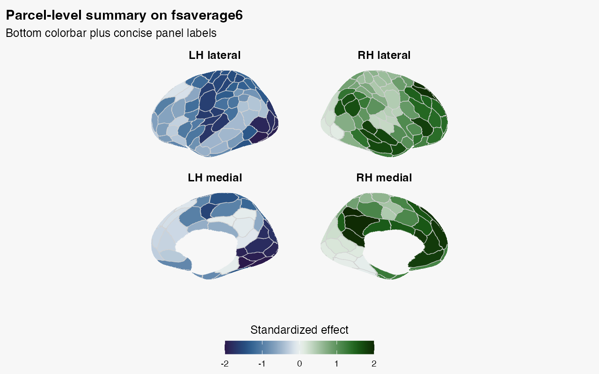
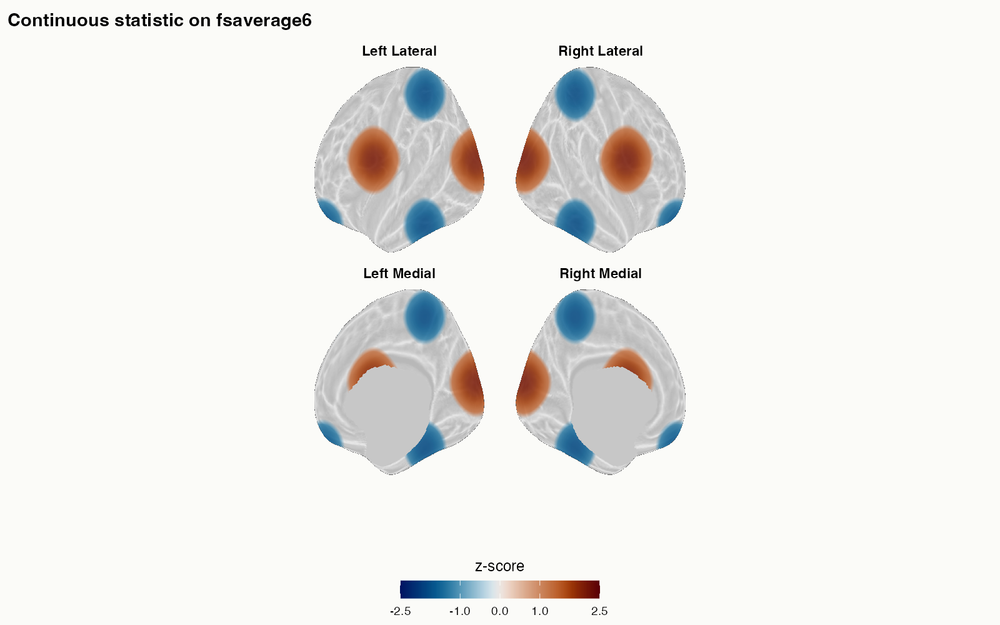
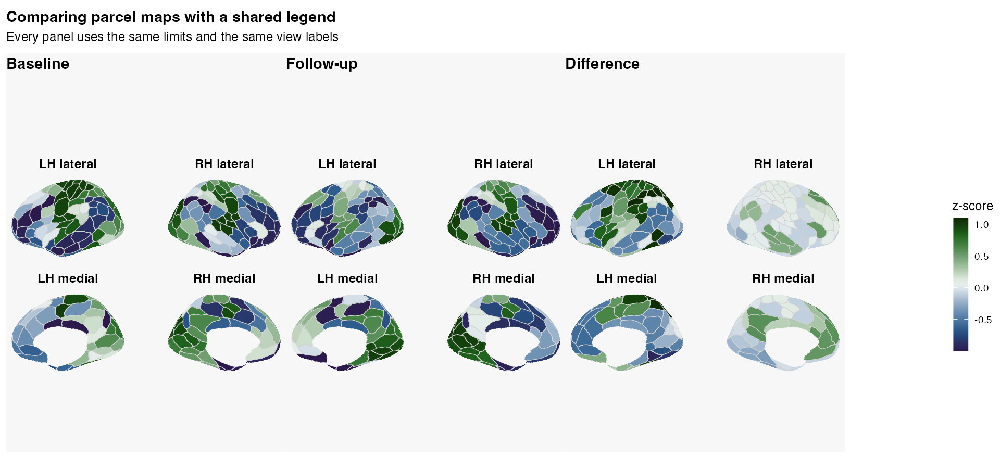

What problem are we solving?
You often have either parcel-level estimates or a continuous statistic on the cortical surface and need a figure that is already arranged, labelled, and publication-ready. The awkward part is not only panel composition. The figure must also preserve what the values mean: parcel maps may show atlas boundaries, whereas a continuous field should appear on a quiet anatomical substrate with no parcel or occlusion lines drawn over it.
plot_brain() and plot_brain_grid() are the
high-level entry points for that job. They let you compose static
surface figures directly from parcel values instead of building the
figure by hand after plotting.
What do you need before you start?
For a parcel figure, you need a surface atlas and a keyed result
table with one row per parcel. A positional numeric vector remains
supported for code that already guarantees atlas order. For a continuous
figure, use the same atlas to supply geometry, cortex mask, and
anatomical provenance, then provide one value per surface vertex. The
API also accepts a NeuroVol, but does not currently enforce
that volume’s coordinate-space compatibility; the limitation is made
explicit below.
atl <- schaefer_surf(
parcels = 200,
networks = 7,
space = "fsaverage6",
surf = "inflated"
)
parcel_results <- tibble::tibble(
roi_index = atl$ids,
Baseline = sin(seq_along(atl$ids) / 15),
Follow_up = cos(seq_along(atl$ids) / 18)
)
parcel_results$Difference <-
parcel_results$Baseline - parcel_results$Follow_up
parcel_results <- parcel_results[rev(seq_len(nrow(parcel_results))), ]The first call may download and cache Schaefer annotation files. The figures below were generated from that exact configuration and are committed so the article remains useful during an offline build.
The deliberately reversed rows demonstrate that plotting uses
roi_index, not table position.
plot_brain_grid() can select several numeric columns from
the same table.
plot_brain_grid(
atl,
data = parcel_results,
values = c("Baseline", "Follow_up", "Difference"),
by = c(id = "roi_index")
)How do you build one polished panel figure?
Use plot_brain() when you want one figure with a few
surface panels and a single legend.
plot_brain(
atl,
data = parcel_results,
value = Baseline,
by = c(id = "roi_index"),
views = c("lateral", "medial"),
interactive = FALSE,
style = "ggseg_like",
colorbar = "bottom",
colorbar_title = "Standardized effect",
title = "Parcel-level summary on fsaverage6",
subtitle = "Bottom colorbar plus concise panel labels",
panel_labels = c(
"Left Lateral" = "LH lateral",
"Right Lateral" = "RH lateral",
"Left Medial" = "LH medial",
"Right Medial" = "RH medial"
)
)
This is the default static workflow when you want:
- view-aware facet labels without post-hoc editing
- one explicit legend instead of an implicit colour mapping
- a single annotated figure object you can render or save directly
How do you show a continuous statistic instead?
Use style = "stat_publication" when the colour
represents a continuous vertex-wise field rather than parcels. The
preset selects a neutral cortex, removes parcel and culling-derived
silhouette lines, keeps anatomy below the statistic, and obtains the
legend from the overlay rather than from a dummy base map.
This example derives a smooth synthetic field from the inflated
coordinates. Replace stat_overlay with your own
list(lh = ..., rh = ...) after checking that each vector
has one value per vertex.
stat_figure <- plot_brain(
atl,
overlay = stat_overlay,
overlay_threshold = 1,
overlay_lim = c(-2.5, 2.5),
overlay_title = "z-score",
style = "stat_publication",
static_backend = "cpu",
interactive = FALSE,
colorbar = "bottom",
medial_wall = "shade",
camera = "canonical",
orientation_labels = FALSE,
title = "Continuous statistic on fsaverage6"
)
stat_figure
Notice that the threshold appears as marks at -1 and
1, while the colour limits remain exactly
[-2.5, 2.5]. The cortex mask is independent of parcel
values, so the medial wall cannot acquire overlay colour merely because
an atlas uses label zero. When curvature comes from separate white
geometry, the returned provenance reports whether that mesh and the
displayed mesh have identical vertex dimensions and face connectivity.
An explicit anatomy vector cannot establish that topology by itself.
plot_brain() can accept a NeuroVol as
overlay, but the current projection path cannot read a
template-space identity from that object and does not enforce or apply a
cross-coordinate transform. Treat this as unchecked caller
responsibility: use only a volume already expressed in the coordinates
of the resolved white and pial surfaces. fsaverage surfaces
use MNI305 coordinates, whereas most modern MNI volumes use MNI152
coordinates; do not pass such a volume directly. The sampling itself
uses five fractions from 0.1 through 0.9 of the white-to-pial ribbon,
averages those depth samples, and applies no tangential smoothing unless
requested. Projection, mask, anatomy, camera, and legend choices are
retained as attributes on the returned figure.
How do you compare several maps with one legend?
Use plot_brain_grid() when each panel is a different map
but the colour scale should mean the same thing everywhere.
plot_brain_grid(
atl,
data = parcel_results,
values = c("Baseline", "Follow_up", "Difference"),
by = c(id = "roi_index"),
views = c("lateral", "medial"),
titles = c("Baseline", "Follow-up", "Difference"),
shared_scale = TRUE,
colorbar = "right",
colorbar_title = "z-score",
title = "Comparing parcel maps with a shared legend",
subtitle = "Every panel uses the same limits and the same view labels",
panel_labels = c(
"Left Lateral" = "LH lateral",
"Right Lateral" = "RH lateral",
"Left Medial" = "LH medial",
"Right Medial" = "RH medial"
),
style = "ggseg_like",
ncol = 3
)
The arguments that matter most here are:
-
titles: names each map -
shared_scale = TRUE: enforces one global value range -
colorbar: places a shared legend on the right or bottom -
panel_labels: simplifies the repeated surface-view labels
If you want each panel to optimise its own within-panel contrast, use
shared_scale = FALSE, colorbar = FALSE. That can make weak
patterns easier to see, but you lose strict colour comparability across
panels, so a single global colorbar would be misleading.
How should you label the panels?
Panel labels name the surface being shown: hemisphere plus view, such
as Left Lateral or Right Medial. They do not
describe where the panel sits in the final grid.
In lateral and medial views, plot_brain() uses a fixed
anatomical orientation: left hemispheres have anterior on the left, and
right hemispheres have anterior on the right.
Use panel_labels when the default labels are too long.
Keep both the hemisphere and the view when a figure mixes lateral and
medial views; use shorter labels such as LH and
RH only when each hemisphere appears in one view.
What should you remember?
Choose the style from the scientific object you are displaying:
- use
style = "ggseg_like"for parcel identities or parcel-valued estimates; - use
style = "stat_publication"for a continuous vertex field or projected statistic volume; - use the default ggplot backend for parcel tables, and keep the CPU backend for deterministic continuous vertex overlays.
Then adjust:
-
panel_labelsfor shorter facet labels -
colorbarandcolorbar_titlefor the shared legend -
title,subtitle, andcaptionfor figure annotations -
ncolfor the panel grid
For a continuous field, prefer overlay_threshold,
overlay_lim, medial_wall, and
camera over low-level line-width controls. Parcel
boundaries and internal depth discontinuities are not activation
contours.
Use panel_layout = "native" only when you need the raw
projected coordinates for a custom workflow.
Where should you go next?
Use this vignette as the reference for figure composition, then branch out depending on what you need next:
-
vignette("surface-parcellations", package = "neuroatlas")for loading surface atlases and overlays -
vignette("atlas-visualization", package = "neuroatlas")for volumetric plotting and palette workflows -
?plot_brainfor the full single-figure API -
?plot_brain_gridfor the shared-scale multi-panel API